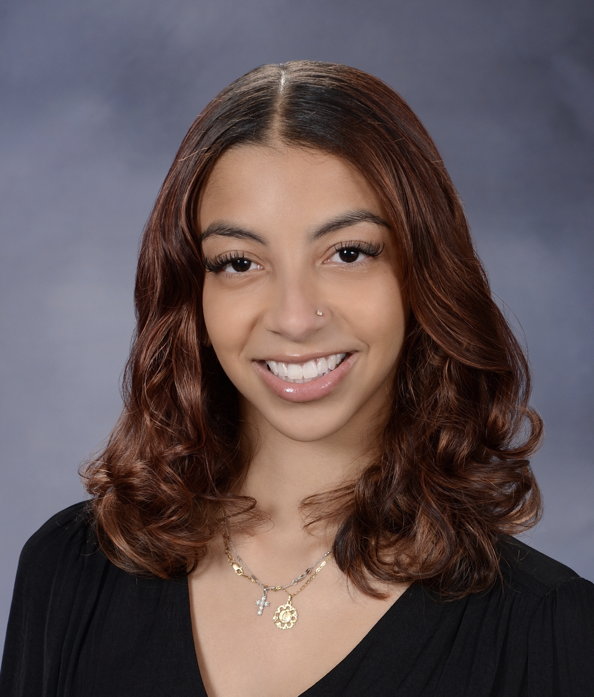

About me
Hi! I’m Valerie, a Cornell University graduate with a Bachelor’s in Information Science.
Growing up in The Bronx, New York, I was always drawn to creative expression through painting, video editing, digital art and fashion. As I explored web development and design, I discovered a space where creativity and technology could intersect in meaningful ways. Design became more than just a skill to me, it became a way to tell stories and create experiences that resonate with people. Today, I am especially interested in the evolving relationship between art and artificial intelligence, and how emerging technologies can expand creative possibilities rather than replace them. I hope to contribute to a future where technology empowers artists, designers, and creators to innovate in new and accessible ways.
My mission is to help make the worlds of design and technology more inclusive and welcoming, particularly for underrepresented minorities in tech and creative industries. I believe everyone deserves the opportunity to bring their ideas to life, and I aspire to create work that inspires others to see themselves reflected in these spaces.
